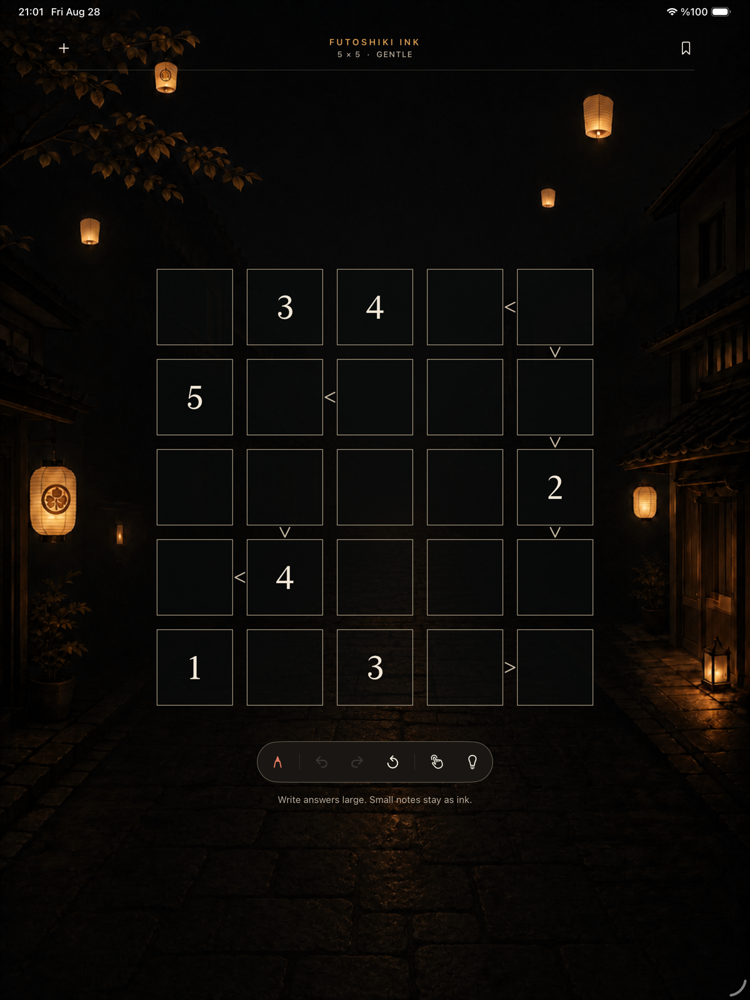

Personal
Your reasoning stays visible.
Full-size answers, small candidates, cross-outs, and corrections remain part of the page.
Made for iPad + Apple Pencil
A quiet Futoshiki puzzle book where your handwriting stays yours—and the software knows when to step back.

01 / The page is the interface
Futoshiki Ink preserves the original strokes from Apple Pencil. Recognition adds meaning quietly; it never replaces your handwriting with typeset digits.
Personal
Full-size answers, small candidates, cross-outs, and corrections remain part of the page.
Private
Digit recognition and puzzle generation happen locally. No account is required to solve.
Exact
Ask for a nudge, then reveal the reasoning only if you want it. Every puzzle has one solution.
02 / Quiet intelligence
Questions or feedback?